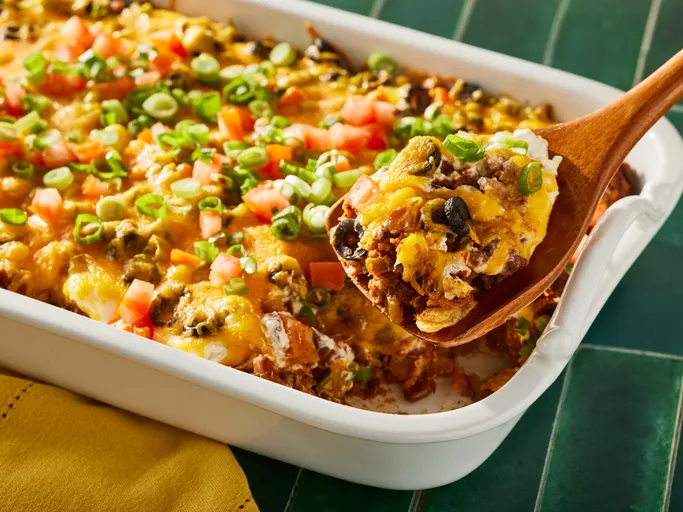

This taco casserole with ground beef and tortilla chips is easy to make and very tasty. I often
substitute with ground turkey and low-fat dairy products, and it's still delicious! Serve this casserole
with chips, salsa, and green salad.
Ingredients
1 pound lean ground beef
1 small onion, chopped
1 (1 ounce) package taco seasoning mix
1 (10 ounce) can enchilada sauce
1 (15 ounce) can black beans, drained and rinsed
1 cup frozen corn kernels
3 cups crushed tortilla chips
2 cups shredded Cheddar cheese
1 cup shredded Monterey Jack cheese
1/2 cup sliced black olives (optional)
1/4 cup chopped fresh cilantro (optional)
Steps
Preheat oven to 350°F (175°C). Lightly grease a 9x13 inch baking dish.
In a large skillet over medium heat, cook the ground beef and onion until the beef is browned and the onion
is tender. Drain any excess fat.
Stir in the taco seasoning mix, enchilada sauce, black beans, and corn. Cook for 5 minutes, stirring
occasionally.
Spread half of the crushed tortilla chips in the prepared baking dish. Layer with half of the beef mixture,
then sprinkle with half of the Cheddar and Monterey Jack cheeses. Repeat layers with remaining chips,
beef mixture, and cheeses. Top with sliced black olives if desired.
Bake in the preheated oven for 20-25 minutes, or until the cheese is melted and bubbly.
Garnish with chopped fresh cilantro if desired. Let the casserole cool for a few minutes before serving.